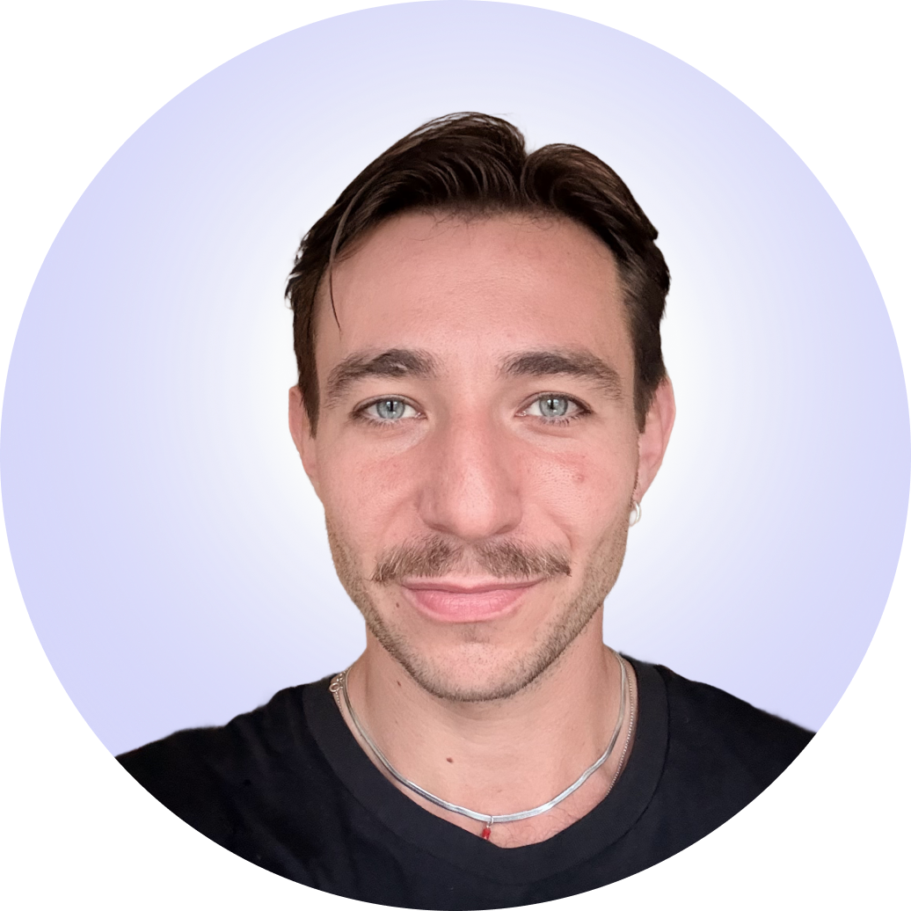

Founder and builder with a decade of turning ideas into working ventures. I've launched and scaled several companies, led cross-functional teams of up to 100 people across three countries, and shipped products from zero to market — from AI decision software to IoT and digital health. Today I'm building Creativate, developing AI software for SMEs. I thrive in zero-to-one: forming the hypothesis, building the MVP, validating with real users, and iterating fast. I also completed a multi-week pre-selection training in a US Navy SEAL environment — resilience, teamwork, and mental toughness.
Building Creativate, a studio developing AI-based software for SMEs — cNode, a decision-support tool, and AI Playbook, a multilingual knowledge base. Alongside two co-founders I lead project delivery, partner coordination, and funding applications. Selected for the Futury accelerator.
Co-founded a tech-for-equity agency building software for startups and SMEs. Led operations, client delivery, and product direction. Also managed our internal incubator (Camsol Innovations GmbH, now seventy2 Holding GmbH), overseeing portfolio health, milestone tracking, and product design for incubation projects including Gasvisor, CheckMe, and Skulup. Scaled to 6 GmbHs + 2 LTDs, ~100 people at peak across Germany, Cameroon, and Rwanda.
My first "real job" in a structured corporate environment. Learned a lot about how larger organisations work, contributed to a digital platform launch (Karla Plattform GmbH), and got hands-on with UX research and B2B strategy.
Designed the product identity and contributed to software development for a digital platform within the Sparkasse ecosystem. My first time working on product design in a larger team context.
Turned the family business into a consultancy for product design and organizational transformation. Modernized the tech stack and advised early-stage start-ups on how to structure and scale.
Student-run consulting organization at Universität Greifswald. Worked on real consulting projects for local businesses and organizations while studying economics.
Co-founded the international chapter of Rotaract in Berlin. Organized events, built partnerships, and helped grow the community from scratch.
Decision-support platform where teams define decisions, set weighted goals, state assumptions, compare scenarios, get AI-assisted recommendations, and export audit-ready decision logs.
Studio and consultancy developing AI products and helping companies adopt AI responsibly — business-first. Runs a small ecosystem of websites, a content hub, and client platforms.
Multilingual AI compliance and regulatory knowledge base covering EU AI Act, GDPR, EDPB guidelines, and responsible AI practices. 30+ articles across 7 categories, interactive readiness assessments, full-text search, and glossary. Content-driven lead-gen tool.
Product Design Lead (Camsol Incubation)
IoT CO₂ management platform for facility managers. Smart sensors on gas bottles measure fill levels in real-time, feed data to a cloud dashboard, and trigger automated reordering via supplier networks. Led design system setup and UI refinement during early incubation at Camsol.
Strategic Consultant (Camsol Incubation)
Digital health platform for breast cancer detection across African communities. Combines AI-powered self-check guides, a 24/7 health companion (Nia), provider network, and the CheckMate screening device for clinics. Consulted on platform architecture — structuring doctor-patient workflows and dashboard design.
Product Lead (Camsol Internal)
White-label Learning Management System targeting African education centers. Enables training institutes to create branded learning platforms, manage courses, enroll students, and collect payments via mobile money — all from a single dashboard. Built as an internal Camsol product, mobile-first and designed for low-bandwidth environments.